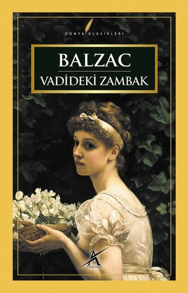
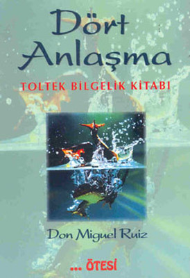

- Vadideki Zambak 
- Great Gatsby
- 1984
- Dört Anlaşma 


I like reading books. I want to read more as I read.
My other favorite books are Enigma which is about Alan Turing's life,
Fareler ve İnsanlar, Küçük Prens, Hayvan Çiftliği, Fahrenheit 451,
Çavdar Tarlasında Çocuklar and Stefan Zweig's book like Korku, Olağanüstü Bir Gece, Ay Işığı Sokağı,
Bir Kadının Yaşamından 24 saat, Bilinmeyen Bir Kadının Mektubu and Yakıcı Sır and more.